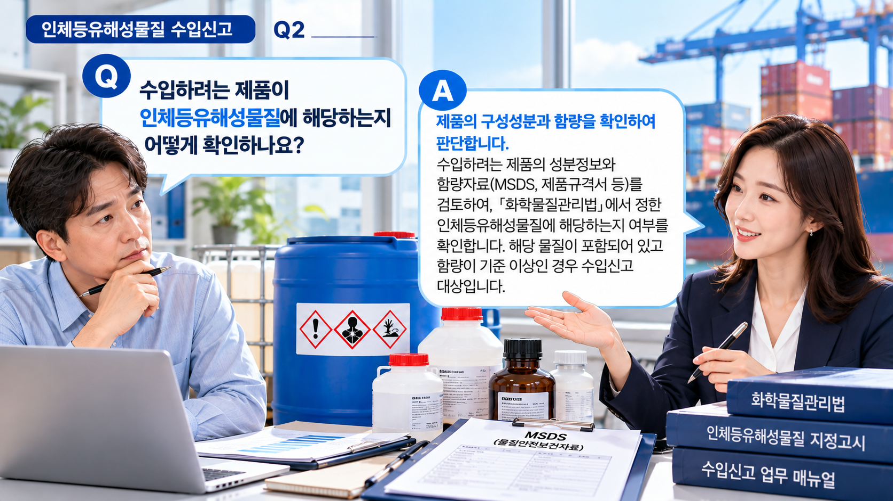
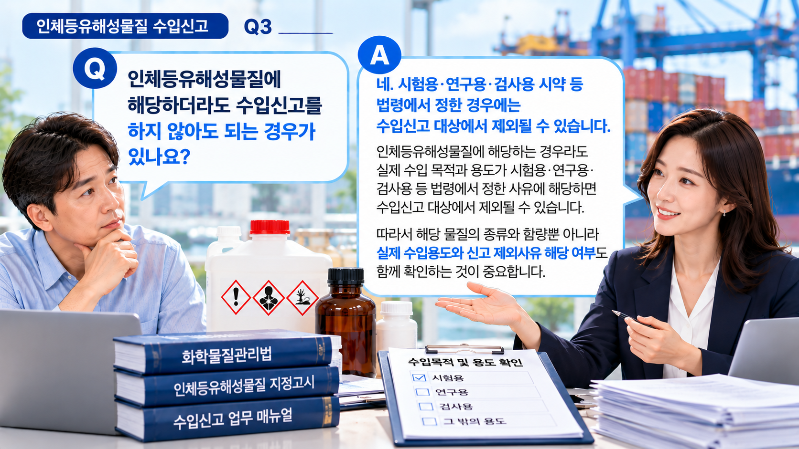

01. 인체등유해성물질이란?
화학물질관리법에서는 다음 세 종류의 물질을 통틀어 인체등유해성물질이라고 합니다.
| 구분 | 확인 대상 |
|---|---|
| 인체급성유해성물질 | 급성적인 인체 유해성과 관련된 지정물질 |
| 인체만성유해성물질 | 만성적인 인체 유해성과 관련된 지정물질 |
| 생태유해성물질 | 환경·생태 유해성과 관련된 지정물질 |
이러한 물질을 수입하려는 경우에는 화학물질관리법에 따른 수입신고 대상인지 확인해야 합니다.
02. 모든 수입 화학제품이 신고 대상인가요?
아닙니다. 해외에서 화학제품을 수입한다는 이유만으로 모든 제품이 인체등유해성물질 수입신고 대상이 되는 것은 아닙니다.
먼저 제품에 포함된 구성성분을 확인한 다음 해당 성분이 인체등유해성물질에 해당하는지를 확인해야 합니다.
혼합제품이라면 해당 물질의 함량기준과 실제 제품 내 함량도 함께 살펴보는 것이 중요합니다.
03. 신고 대상 여부는 어떻게 확인하나요?
수입하려는 제품의 성분자료를 확보하고 구성성분별로 다음 정보를 확인하는 것이 기본입니다.
- 화학물질명
- CAS No. 등 물질 식별정보
- 제품 내 함유량
- 인체등유해성물질 해당 여부
- 해당 물질의 함량기준
제품명이나 용도만으로 신고 여부를 판단하기보다는 실제 구성성분을 기준으로 확인해야 합니다.

04. 어떤 자료를 준비해야 하나요?
신고 대상 여부를 검토하려면 우선 제품의 구성성분과 함량을 확인할 수 있는 자료가 필요합니다.
- MSDS(물질안전보건자료)
- 성분내역서
- LOC(Letter of Confirmation) 등 성분 확인자료
- 제조자·수출자 또는 공급자가 제공하는 관련 자료
실제 수입신고 시에는 인체등유해성물질의 성분을 증명할 수 있는 서류를 첨부해야 합니다.
※ 보유자료만으로 물질명이나 함량을 확인하기 어려운 경우에는 제조자 또는 공급자에게 추가자료를 요청할 필요가 있습니다.
05. 수입신고서에는 어떤 내용이 들어가나요?
인체등유해성물질 수입신고서에는 수입제품과 해당 물질에 관한 기본정보를 기재합니다.
| 구분 | 주요 내용 |
|---|---|
| 제품정보 | 제품명·수입국·용도 등 |
| 수입정보 | 연간 수입 예정량·HSK No. 등 |
| 물질정보 | 인체등유해성물질 명칭·CAS No. 등 |
| 함유정보 | 제품 내 해당 물질의 함유량 |
06. 신고 대상에서 제외되는 경우도 있나요?
인체등유해성물질에 해당한다고 해서 모든 수입이 동일하게 신고 대상이 되는 것은 아닙니다.
시험용·연구용·검사용 시약을 해당 목적으로 수입하는 경우 등 법령에서 정한 경우에는 수입신고 대상에서 제외될 수 있습니다.
신고 대상과 제외사유를 함께 확인하세요.
제품에 인체등유해성물질이 포함되어 있는지를 확인한 뒤에는 실제 수입목적과 사용형태 등을 기준으로 법령상 신고 제외사유가 있는지도 함께 검토하는 것이 좋습니다.
07. 수입신고는 어떤 순서로 준비하나요?
특히 해외 공급자로부터 받은 자료에 성분명이나 함량정보가 충분하지 않은 경우에는 신고 준비 전에 필요한 정보를 추가로 확보하는 것이 중요합니다.

08. 신고한 내용이 변경되면 다시 확인하세요.
최초 신고 이후에도 신고내용에 일정한 변경이 발생하면 변경신고 대상이 될 수 있습니다.
- 신고한 인체등유해성물질의 종류 또는 함량이 변경된 경우
- 신고한 수입 예정량보다 50% 이상 증가하는 경우
- 신고한 인체등유해성물질의 용도가 변경된 경우
- 사업장 명칭·대표자 또는 소재지 등이 변경되는 경우
따라서 최초 신고 후에도 제품의 성분이나 수입계획이 변경되었다면 기존 신고내용을 그대로 사용하기보다는 변경신고 대상인지 확인하는 것이 좋습니다.
09. 수입 전에 특히 주의할 점
- 제품명만으로 신고 대상 여부를 판단하지 않습니다.
- 구성성분의 정확한 물질명, CAS No. 및 함량을 확인합니다.
- 혼합제품은 해당 물질의 함량기준도 함께 확인합니다.
- 성분자료가 부족한 경우 임의로 추정하지 않고 제조자·공급자에게 추가자료를 요청합니다.
- 신고 대상 여부뿐 아니라 법령상 제외사유도 함께 확인합니다.
- 기존 신고 후 성분·함량·용도·수입 예정량 등이 변경되었다면 변경신고 대상인지 다시 확인합니다.
인체등유해성물질 수입신고를 준비하고 계신가요?
수입하려는 제품과 현재 가지고 있는 성분자료를 기준으로 추가로 확인해야 할 사항을 먼저 점검해 보세요.